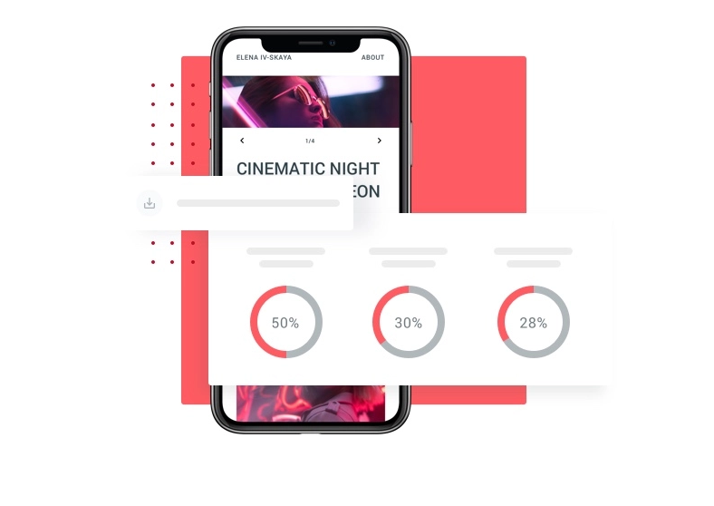

Check your Internet speed in under 30 seconds. The speed test usually transfers less than 40 MB of data, but may transfer more data on fast connections. To run the test, you'll be connected to Measurement Lab (M-Lab) and your IP address will be shared with them and processed by them in accordance with their privacy policy. M-Lab conducts the test and publicly publishes all test results to promote Internet research. Published information includes your IP address and test results, but doesn’t include any other information about you as an Internet user.
